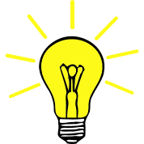

JavaSkript može da promeni stil u HTML dokumentu
JavaScript može da sakrije HTML element kao što je naprimer ovaj tekst
JavaScript Može da prikaže skriveni HTML element
Pozicioniranje JavaScript koda u HTML dokumentu
Skript u body sekciji HTML dokumenta
Skript u head sekciji HTML dokumenta
Klikom na dugme pokrenućeš JavaScript iz head sekcije
Eksterni JavaScript dokument
Java skript prikaz podataka
JavaScript može da prikaže podatke na različite načine
Prikazivanje podataka unutar HTML dokumenta innerHTML
Takođe i korištenjem document.write()
prikaz podataka unutar iskačućeg prozora (alert boks) window.alert()
prikaz unutar konzole brosvera console.log()
document.getElementById(id) može koristiti da JavaScript pristupi bilo kom html tagu
PRIMERI
Korištenje getElementById(id)
Naprimer ispod ovog paragrafa je paragraf id="proba6" u kom JavaScript prikazuje rezultat matematičke operacije 15+6
Korištenje document.write()
document.write(5 + 6 * 5) prikazuje rezultat operacije
document.write("5 + 6 * 5") prikazuje operaciju
JS može da obriše ceo postojeći HTML kod
Klikom na dugme obrisaćeš ceo html kod
JS može da prikaže nešto u iskačućem prozoru za obaveštenja
klikom na dugme pokrećete prozor obaveštenja
JavaScript iskazi (Statements)
A JavaScript program je lista iskaza (Statements) koji se izvršavaju pomoću računara
primer iskazi koji se realizuju pomoću skripta u sledećem redu x=55;y=60; z=x+y
Treba znati da se iskazi u JavaScript-u realizuju jedan po jedan onim redom kojim su i zapisani
Kada su razdvojeni tačka zarezom ; iskazi mogu da se pišu i u jednom redu naprimer a=5; b=6; c=a+b;
JavaScript ignoriše višestruke razmake između reči i slova pa se ovo može koristiti za pravljenje preglednijeg koda
JavaScript code blocks JavaScript iskazi mogu da se grupišu zajedno u kod blokovima unutar vitičastih zagrada{....}
Svrha kod blokova je da definiše iskaze koji će se realizovati zajedno
JavaSkript funkcije koriste iskaze grupisane u okviru blokova function myFunction() {..........}
JavaScript iskazi (Statements) u okviru blokova
JavaScript blok kod ispisuje se unutar zagrada { }
kodovi unutar bloka realizuju se zajedno
JavaScript može prikazati sistemsko vreme i datum
JavaScript može da promeni sadržaj HTML dokumenta
JavaScript može menjati HTML atribute.
U ovom primeru JavaScript menja HTML src (source) atribut ta prikazanu sliku (sijalica).
